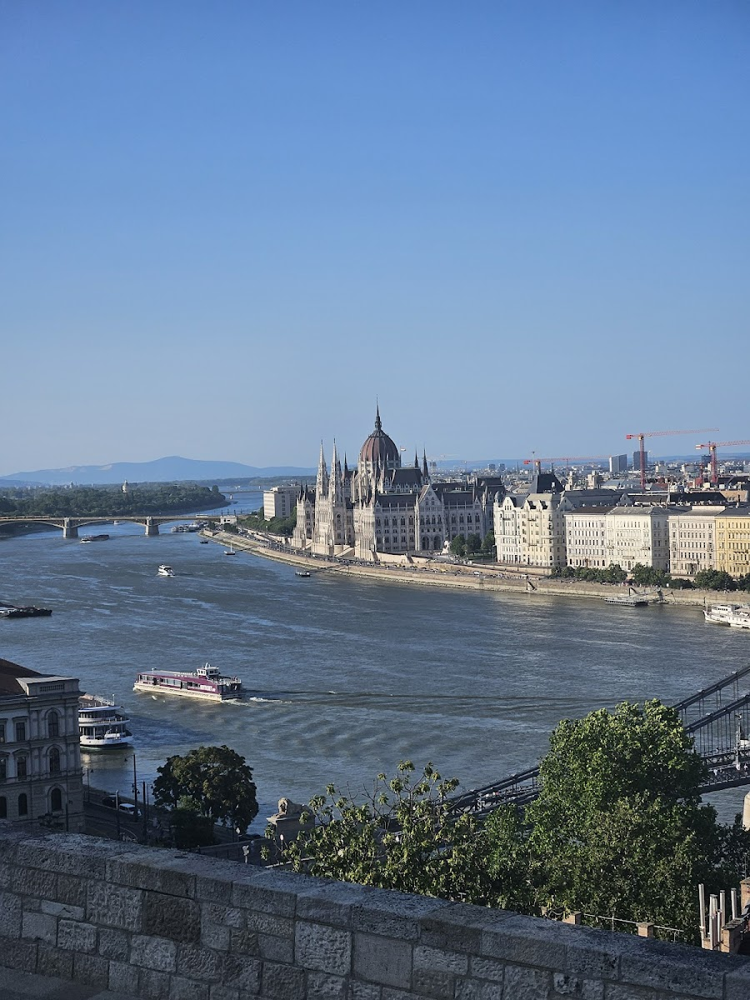
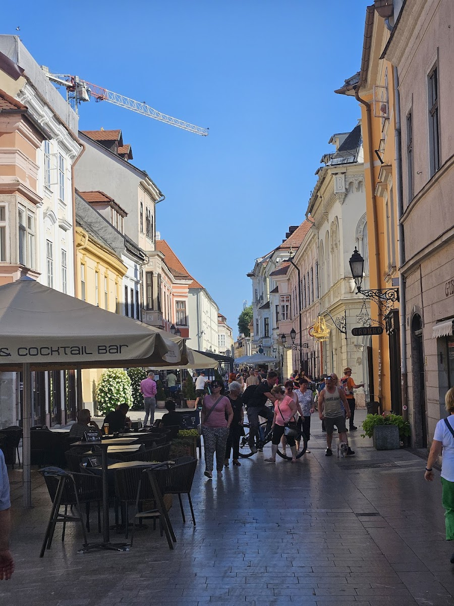
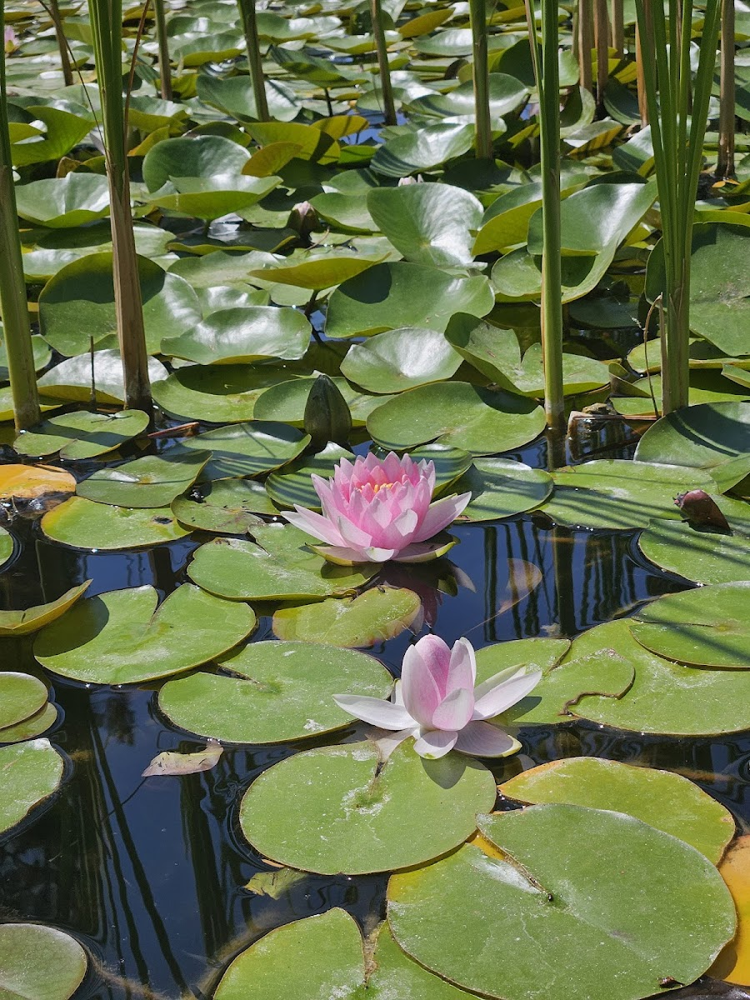
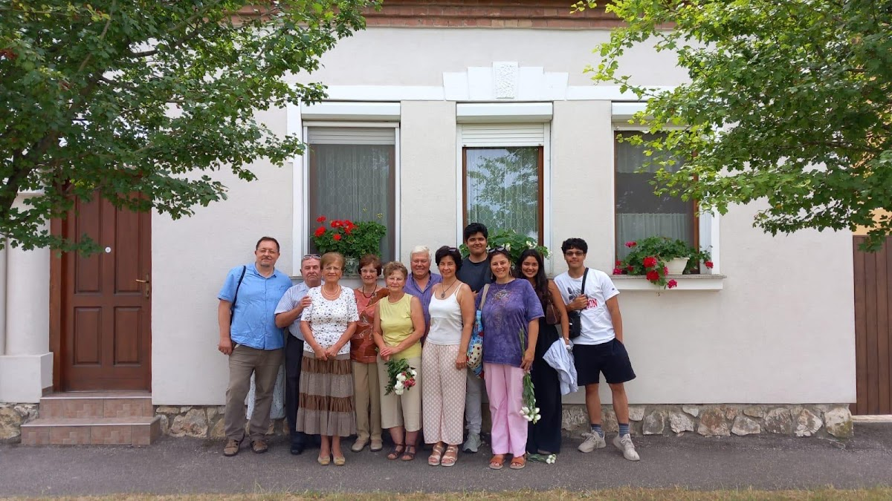
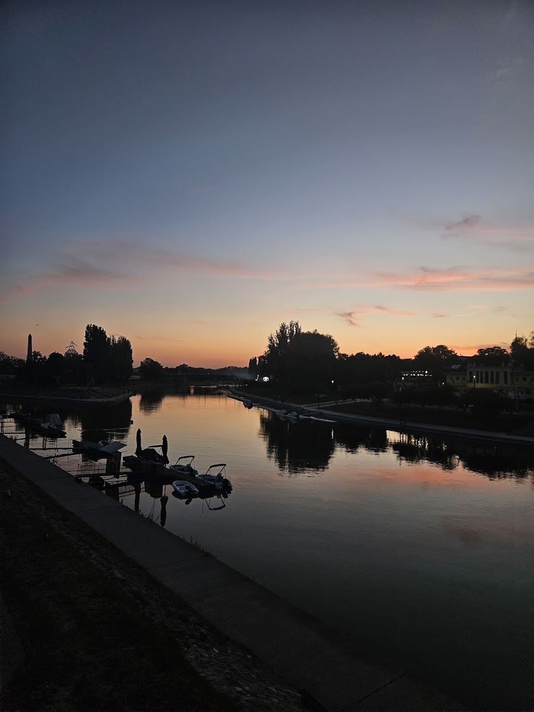

Arriving in Budapest was a big change from the salty air and beaches of Crete. It was replaced by by bridges over the Danube and city night life.
The view of the Parliament building from the river was phenomenal, both at day and night.
After a day of the city, we left the traffic behind and took a trip out to a small village where distant family still lives.




